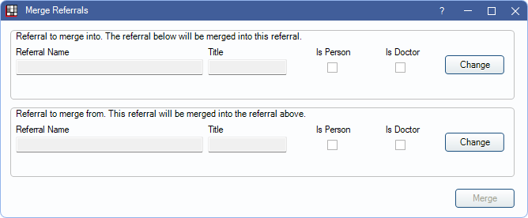

Merge Referrals
The Merge Referral tool can be used to merge duplicate referrals.
In the Main Menu, click Tools, Misc Tools, Merge Referrals.
Merging referrals is permanent and cannot be undone. The Referral Merge Security Permission is required to run the tool.
- Select the Referral to merge into. Click Change to choose the referral that will remain from the Referral List.
- Select the Referral to merge from: Click Change to choose the referral that will merge into the above referral.
- Click Merge.
- A warning indicates results are permanent and cannot be undone. Click Yes to proceed with the merge.
- An additional warning is shown if referral information (referral names, titles, and Is Person/Is Doctor) does not match. The warning indicates which fields do not match, the total patients attached to the Referral to merge from, and that the change is irreversible. Click Yes to confirm the merge. Click Cancel to stop the merge.
- If the referral names, titles, and is person/is doctor settings all match, this warning is not shown, and the merge is completed immediately upon clicking Yes from Step 4.
- Once the merge is complete, a Done message appears.


After a successful merge, the Referral to merge into (Step 1) is assigned to all patients with the Referral to merge from (Step 2). The Referral to merge from is also removed from the Referral List.